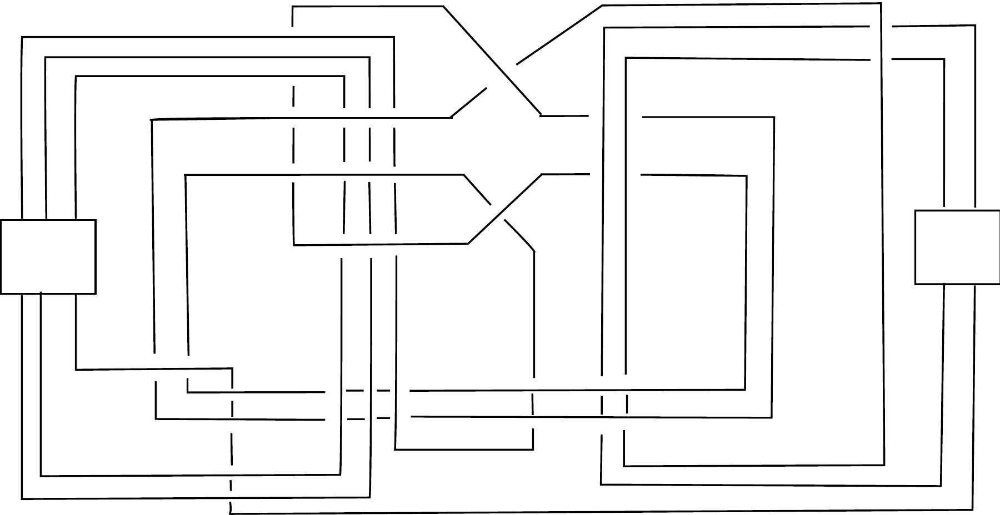

Checked: 48 crossings · 192 darts · trace-to-stored planar-map correspondence.
Still conditional: source crossing transcription and calibrated twist handedness.
Pre-blow-down source diagram → explicit framed blow-downs → certified L₂,₁ (control 17) → certified L₃,₁ → link obstruction → independently justified knot obstruction.
The last implication is a proof obligation. No counterexample established.